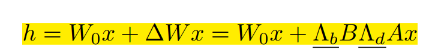
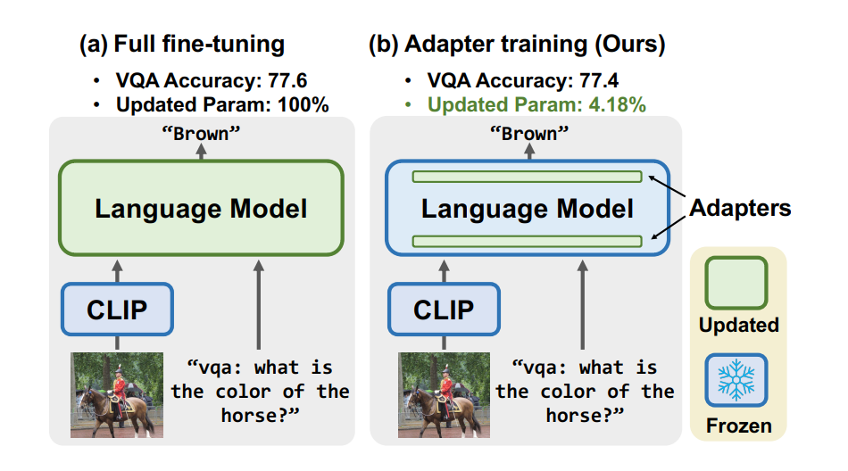

LLM笔记
这篇是关于LLM的一些笔记和乱七八糟想法，未必正确。
OpenAI一开始就是大佬云集+资金充裕，想要搞出通用人工智能的
看了下GPT-1的几个作者，Alec Radford，他也是DCGAN的一作，15年发表，15k引用
Karthik Narasimhan在16年有一篇RL paper，1k多引用
Tim Salimans在2016年有一篇GAN文章9k引用
对比Transformer的几个作者，在Transformer之前都没有什么高引用文章，顶多两三百。
还有BERT一开始比GPT-1火，看有人说是因为BERT的完形填空确实比GPT-1的生成要简单（毕竟生成是extend，单边的），所以一开始BERT会有更好的效果
BERT是在拟合$P(x_i|x_1, …,x_{i-1}, x_{i+1},…,x_n)$
GPT是$P(x_i|x_1, …,x_{i-1})$
然后$x_1$到$x_{i-1}$可以被看做是$text, prompt$
所以对大量文本本身的学习导致了GPT的很强的few-shot, zero-shot泛化能力
或者说，其实few-shot和zero-shot就不是一种传统意义上的机器学习，所以也没有违反机器学习的本质；GPT在预训练的时候是学过这个$P(output|input(including,,prompt))$分布的
GPT1到3里面，GPT1即提出了zero-shot能力，GPT2开始增加规模，Scaling Laws讨论了模型规模对loss的影响，总之openai一直是在做同一件事。
问题：为何prompt对LLM输出的影响这么大？
可能两个原因，一个是LLM对真人的推理能力学习的还不够好（欠拟合/数据不够等等）
一个是，不好的prompt其实就没把事情说清楚
let’s think step by step不是玄学（一开始我认为他跟《水知道答案》似的），它相当于告诉模型需要一步一步推理，不要一下生成答案（因为模型没有这个能力。很多情况下真人也没有这个能力，虽然我觉得我经常靠直觉）
比如“去阿拉斯加旅游，给我提几个建议“
这时候模型会按照P(x|“阿拉斯加”“旅游”“建议”）来生成文字，比如可能性最大的x是“阿拉斯加风景很好，建议多呆几天“
如果把prompt改成，“去阿拉斯加旅游，需要做哪些准备“
P(x|“阿拉斯加”“旅游”“准备”）这个分布就会不一样。
如果让他step by step，那么
P(x|“阿拉斯加”“旅游”“准备”“step by step”），这个分布的可能性最大的x是x=“阿拉斯加纬度很高”这么一个直接的结论
然后再把“阿拉斯加纬度很高”输入进去（自回归），就是
P(x|“阿拉斯加”“旅游”“准备”“step by step”“纬度高”），输出x=“天气冷”
P(x|“阿拉斯加”“旅游”“准备”“step by step”“纬度高”“天气冷”），输出x=“带上羽绒服“
这个事情对于人类而言是常识，实际上gpt也很容易学会。但是比如让他算个Dijkstra，就不行了。
Scaling Laws for Neural Language Models
https://zhuanlan.zhihu.com/p/620479884
https://blog.csdn.net/qq_52852138/article/details/131697352
一个对LLM的理论研究，结论就是大力出奇迹……..大模型和大量数据才能得到更好的效果。这篇开门见山把所有结论先列出来了，后面才讲的实验，这种风格不错
核心结论
模型表现和规模强相关，和模型的shape弱相关：规模包括模型参数量N（不包括embedding）、数据集大小D和计算量C，模型shape指模型depth、width、number of self-attention heads
幂方法则：对于模型参数量N、数据集大小D和计算量C三个因素，如果其他两个充足的前提下，模型表现和第三个因素成幂方关系（指数下降，类似$e^{-x}$）。实验曲线如下，可以看出D的影响最大

过拟合：当同时增加数据量和模型参数量时，模型表现会一直变好。当其中一个因素受限时，模型表现随另外一个因素增加变好，但是会逐渐衰减。下图表示数据量不足时，模型很快出现过拟合导致在测试集上效果很快衰减。数据和模型参数量的比例关系大致为$N^{0.74}/D$ ，也就是模型参数增大8倍，数据也需要增大5倍才能发挥模型参数的全部潜力。
Universality of training：在模型参数量不变的情况下，模型的表现是可以预测的。通过对早期的训练曲线进行推断，就能粗略估计训练更长时间后模型的表现
Transfer improves with text performance：当在分布不同的文本上评估模型时，结果与在验证集上的结果密切相关，损失的偏移量大致恒定。这说明用验证集的结果来作为评估指标是合理的
Sample efficiency：大模型能在更少的step内，更少的数据（图4）上达到相同的性能
Convergence is inefficient：当计算量固定时，但是模型大小和数据量没有限制时，大模型在得到最佳性能时，还远远没有收敛。最大训练效率训练比训练小模型到收敛是更 sample efficient的，数据需求随着计算量增长比较慢 D ∼ C 0.27 D \sim C^{0.27}D∼C
0.27
Optimal batch size: 最好的batch size与loss有 power-law 关系，也受到梯度噪声规模的影响
Codex: Evaluating Large Language Models Trained on Code
https://blog.csdn.net/qq_32275289/article/details/124438494
基于GPT的模型架构，在GItHub上微调，可以用来编写Python代码
感觉相比GPT的主线工作，像是个做着玩的？毕竟现在的GPT3和GPT4也可以写代码。
细节：
目标函数没有使用BLEU（困惑度），因为代码不同于自然语言，即使特别相似，但仍然可能不是一个合法的语句，作者使用pass@k来评估模型，即生成n个输出（n>k），从中随机抽取k个输出，输出通过单元测试的概率

对输出做softmax得到概率之前，会除以一个超参数Temperature，来调节不同输出之间的概率差距，当pass@k中的采样数k越大时，T越大效果越好
模型局限性
1. 样本有效性不够，需要训练很多的代码，模型才能输出比较简单的实验
2. Prompt应该怎么写才能获得比较理想的代码，作者找了13 basic building block（对字符串做一些简单的操作：如改变大小写、变换位置等），将文档块任意串起来，发现文档越长，生成代码的质量越差，说明docstring不宜过长（这段可以仔细读一下）
InstructGPT
https://zhuanlan.zhihu.com/p/595891945
这个说的很好，比原文好懂………
无论是“一个问题后面接一个回答”，还是“一个问题后面接另一个问题”，都是训练语料中可能经常出现的模式，因此，你让模型根据一个问题来续写，那无论是续写问题的答案，还是续写更多的问题，对于模型来说都是合理的。这就是问题所在，如果让经过大规模语料（可能也没任何人知道数据集里到底都有些啥乱七八糟玩意儿）预训练的模型，在输出时符合人类的期待？

- 称初始模型为V0，也就是GPT-3。我们可以先人工构造一批数据，不用数量很大，尽其所能吧，然后先让模型学一学，我们这个时候模型为V1。
- 然后让模型再根据一堆prompt输出，看看效果咋地，我们让模型V1对一个prompt进行多个输出，然后让人对多个输出进行打分排序，排序的过程虽然也需要人工，但是比直接让人写训练数据，还是要方便的多，因此这个过程可以更轻松地标注更多数据。然而，这个标注数据，并不能直接拿来训练模型，因为这是一个排序，但我们可以训练一个打分模型，称为RM（reward-model），RM的作用就是可以对一个
<prompt,output>pair打分，评价这个output跟prompt搭不搭。 - 接下来，我们继续训练V1模型，给定一些prompt，得到输出之后，把prompt和output输入给RM，得到打分，然后借助强化学习的方法，来训练V1模型，如此反复迭代，最终修炼得到V2模型，也就是最终的InstructGPT。
“能实现这样的方式，我觉得前提就是——这个模型本身已经比较强大了。只有模型本身就比较强大了，才能人类提供少量的精华数据，就可以开始进行模仿，同时在第二步产出较为合理的输出供人类打分。所以这里的GPT-3作为出发点，是这一套流程能行得通的保证之一，而ChatGPT又是从GPT-3.5出发的，那效果肯定更加好了。”
T5 (Google) 2019.10
T5 means Text-to-Text Transfer Transformer
实在是有点太长了，先搜了下BERT做对比，然后剩下内容直接看解析
这篇里搜索“GPT”, “OpenAI”啥都搜不到。问题：为什么不对比一下？
https://zhuanlan.zhihu.com/p/88377084
all text-based language problems into a text to text format一个模型干所有NLP任务
提出了C4 corpus
模型：encoder-decoder，跟之前的transformer差别不大，改了下position encoding；encoder和decoder的规模分别都跟BERT差不多，所以参数量大约是BERT两倍
训练：greedy decoding
fine tune任务：4 tasks, machine translation, question answering, abstractive summarization, text classification
无监督目标函数：有点像BERT的
（问题：BERT/GPT不也可以吗？创新之处在哪）
文章里搜BERT的结果是：BERT produce a single prediction per input token or a single prediction for an entire input sequence. This makes them applicable for classification or span prediction tasks but not for generative tasks
说是BERT只适合做分类这种，不适合做生成
模型结构：

这个之后可以仔细看一下
比较Unsupervised objectives

training strategy:

看来这个的模型大小和数据还不够？
总之看这个知乎上的解析，没什么创新性的东西。尤其是现在GPT-3，GPT-4的时代了，甚至GPT1都提了zero-shot，这个模型本身应该没啥用了。就像那篇笔记里的人说的一样，OpenAI是一开始就想搞通用人工智能的，Google只是完成一点小任务。不过这篇里面的一些trick可以了解一下。
代码解读：
https://zhuanlan.zhihu.com/p/455216504
Switch Transformers
https://zhuanlan.zhihu.com/p/362525526
https://zhuanlan.zhihu.com/p/344702054
https://zhuanlan.zhihu.com/p/351115630
1. Mixture of Experts（MoE）仅选择模型中的一部分进行计算
由一个「门控网络」来选择咨询哪些专家。
1.6万亿参数，但是用了MoE所以算起来还比较快

将Transformer中的前馈全连接子层（Feed-Forward Network，FFN）视为Expert，使用多个FFN代替原来单一的FFN，并且使用了最简单的路由选择策略，将K设置为1，即不同的输入只会选择一个FFN进行计算（sparse routing)
（1）路由计算量减少，只有一个expert激活；
（2）expert中的batch_size（专家容量）至少减半；
（3）简化路由的实现，减少传统MOE方法中通信的代价。
2. 数据和权重划分：

3. 随机精度

问题：没看懂…….
4. No-Token-Left-Behind机制
反复地把第一次路由的所有溢出的token重新进行路由
结论：
（1）Switch Transformer比MoE和Dense模型都要好；
（2）Switch Transformer在capacity比较小的时候效果更好；
（3）Switch Transformer比MoE要少一点计算量，如果让它们计算量相等的话，那么Switch Transformer还可以有更多提升(Switch-base-Expand)。
PaLM 2022.4
Google, 540B parameters
1.Low-Rank Adaptation
freezes the pretrained model weights and injects trainable rank decomposition matrices into each
layer of the Transformer architecture, greatly reducing the number of trainable parameters for downstream tasks.
Introduction
1.finetune all parameters
2. train only some parameters: inference latency(?), not good as finetune all parameters
3.lora: over-parametrized models in fact reside on a low intrinsic dimension.
advantages:
(1) one pretrained big model + many small lora modules for different tasks
(2) train faster
(3) no inference latency(?计算大模型本身（不带lora模块）的计算量是不变的吧)
对比的应该是这种？adapter
各层之间是串行关系，所以加这么一个bottleneck层并不能很好地利用并行性，跟加整层是一样的。相比之下lora加的是旁路
Approach
pre-trained language models have a low “instrisic dimension”

represent \DeltaW as BA

A: initialize as random gaussian, B=0
Experiments
2.Diffusion
Deep Unsupervised Learning using Nonequilibrium Thermodynamics
forward (or inference) diffusion process which converts any complex data distribution into a simple, tractable, distribution, and then learn a finite-time reversal of this diffusion process which defines our generative model distribution
3.High-Resolution Image Synthesis with Latent Diffusion Models
看了下别人的介绍，说是这个才是现在常用的diffusion？2哪个是最原始的论文，用物理上的扩散来建模的，现在都是用神经网络（unet这种）预测噪声
Introduction
autoregressive (AR) transformers: 66,67
GANs: confined to data with comparably limited variability, model collapse, training instability problem
diffusion: class-conditional image synthesis and super-resolution, but still cost a lot of computation
This work:
First is a perceptual compression stage which removes high-frequency details but still learns little semantic variation.
In the second stage, the actual generative model learns the semantic and conceptual composition of the data.(WTF is this?)
separate training into two distinct phases:
First, we train an autoencoder which provides a lower-dimensional (and thereby efficient) representational space.
Then, train DMs in the learned latent space
for text-to-image tasks: an architecture that connects transformers to the DM’s UNet backbone
citation 23, 66是什么？in contrast to previous work [23,66], we do not need to rely on excessive spatial compression
Related work
VQGAN 23
VQ-VAE 66
Method
explicit separation of the compressive from the generative learning phase
意思就是先用autoencoder压缩后，再训Diffusion？
KL-penalty (like VAE) and VQ-reg

conditional: cross attention
Results
1. downsampling factors: 4 to 16 best. 1 gave too much to the Diffusion, 32 lost too much information
2. generating images
3. conditional: text to image
4. super resolution
5. filling mask
4. VQGAN 23
Taming Transformers for High-Resolution Image Synthesis
6.DoRA: Weight-Decomposed Low-Rank Adaptation
Background：
adapter-based methods
prompt based methods: add extra soft tokens (prompts) to the initial input and focus solely on fine-tuning these trainable vectors
lora(略)
3.2做了个研究，关于finetune，lora和dora的magnitude和direction变化强度分析
发现finetune的长度和方向变化关系不大，而lora基本上是正比。作者搞的dora则更像finetune，说明dora效果比lora好


Method
using pretrained W0
$m=||W_0||_c$ and $V=W_0$
train V using LoRA

4.2 analysis ???没看懂
Reading List:
VeRA(Kopiczko et al., 2024)
Weight Normalization(Salimans& Kingma, 2016)
VL-BART(Sung et al., 2022)
LLaVA
7. VeRA: VECTOR-BASED RANDOM MATRIX ADAPTATION
A和B是随机初始化、固定的矩阵
对角阵b和d可以训练
8. VL-BART
VL-ADAPTER: Parameter-Efficient Transfer Learning for Vision-and-Language Tasks
insert Adapter [16] and its variants, Hyperformer [20] and Compacter [33] into the model
这篇里提到了LoRA（ref 17），但是我记得LoRA的paper里是彻底否定了adapter的做法？
Readlist
Adapter [16]
Hyperformer [20]
Compacter [33]
Radford et al. [37] propose CLIP
9. Weight Normalization
https://zhuanlan.zhihu.com/p/55102378